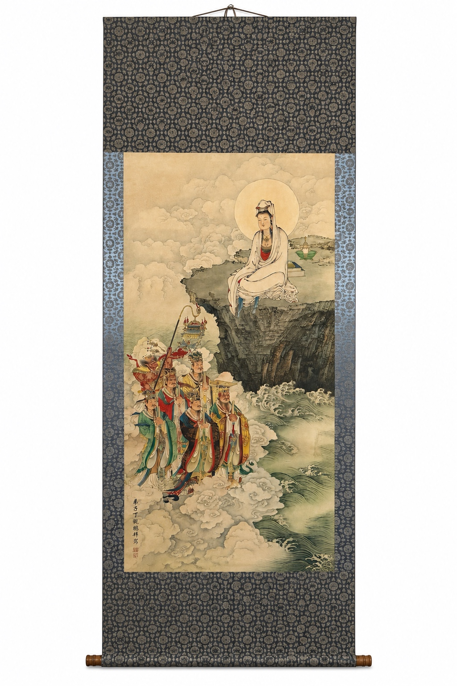
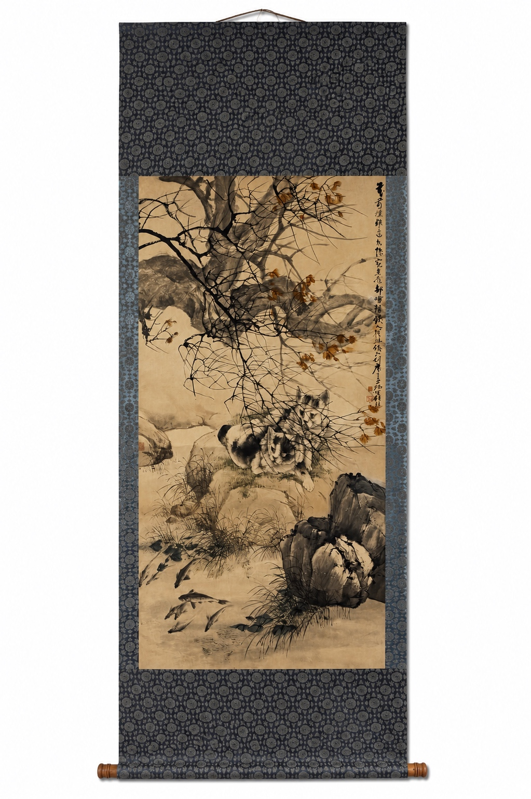

Xu Beihong — Galloping Horse
¥13,000 tax incl.
Explore the works currently listed by Retro日和. We distinguish hand-painted / hand-written works from craft-produced works and provide the production category on each product page.
Hand-painted / hand-written is used only for works made by hand with brush, ink or pigments. Craft-produced work is used for other production methods. Artist names in titles do not by themselves certify authorship.
Ten works are currently online. More hand-painted works, craft-produced works and additional formats will be added over time.







We separate production method from artist attribution so that a name on a work is not mistaken for a guarantee of authorship.
Product pages connect to artists, periods, formats and subjects so the work can be enjoyed before and after purchase.
Single-item orders and wholesale sourcing for stores, e-commerce, interiors and events are both welcome.